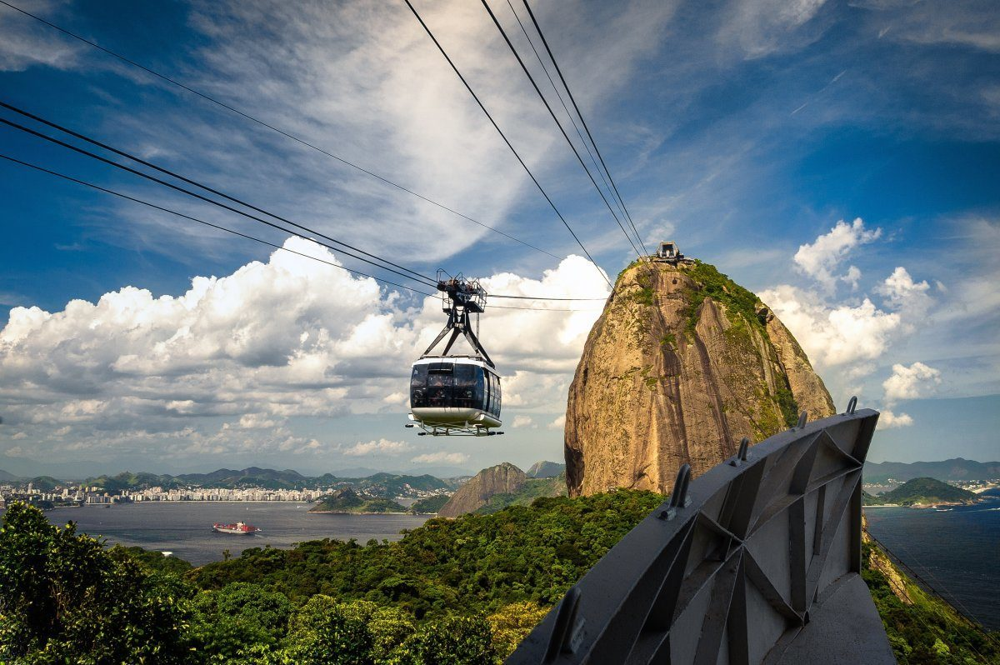
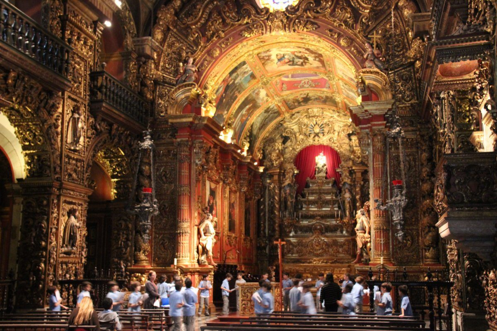
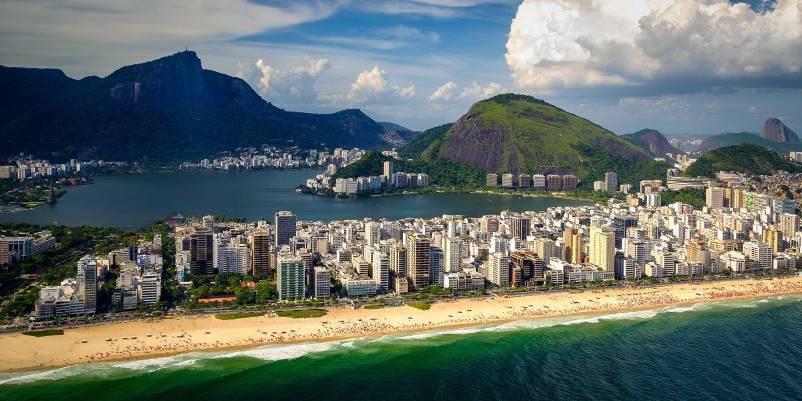
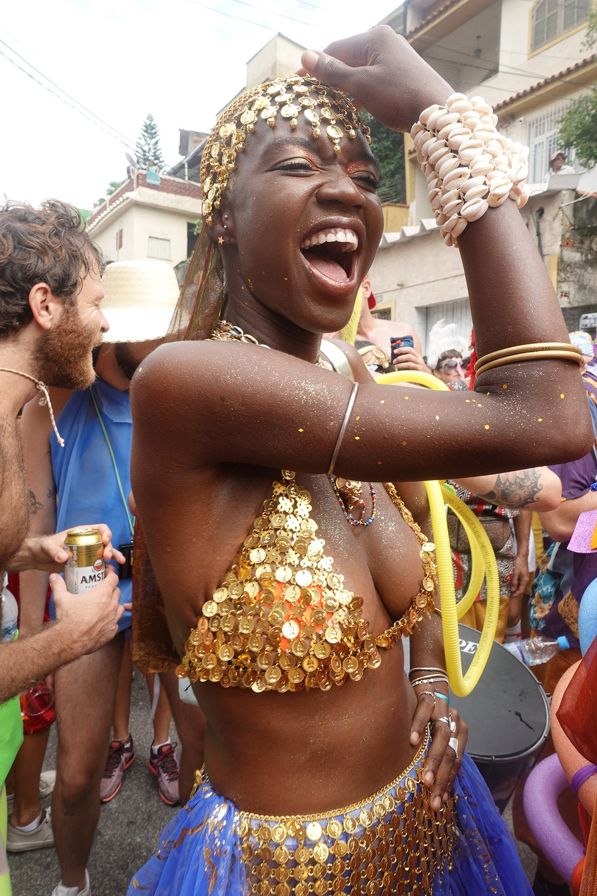

This beach has New Year Celebrations annually on the 31st of EVERY December and this norm will return once COVID-19 is out of the way.
Many surfing competitions take place at this sultry beach. It is also a hotspot for tourists and locals alike in Rio de Janeiro. This sandy stretch is the place to pose, preen, see, and be seen working on your tan – ideally in a teeny-tiny swimsuit – throughout the day. At night, the clubs are packed with people who want to feel like they're in Rio. On Sundays, Oceanside Avenue is closed to traffic for a pedestrian-friendly celebration. There are several options for grabbing a bite to eat drink, from small kiosks to swanky sit-down bars and restaurants. Stroll along the 4km wave-tiled promenade and check out Fort Copacabana at the end of the beach.
See the Sunset From Sugarloaf Mountain

This is not available all year round, it is available only during summmer( from December to March) as customers fear mountains in winter. One of Rio's most striking natural features is this perfect round mound of granite jutting out of the sea. Don't skip the 400-meter summit of Po de Açcar; one look at the jaw-dropping view will convince you otherwise. The view of Rio de Janeiro and Guanabara Bay is one of the most beautiful in the world. Sunset is particularly beautiful, but any time you can get it in is ideal. A two-stage glass-walled aerial cable car departs from Babilônia Hill every 20 minutes, the first of which takes you to Morro da Urca, where summer concerts are sometimes scheduled. Taking the second cable car to the top is well worth it.
Admire the Sao Bento Monastery
 The old colonial monastery, built in 1590, is a must-see in Rio. The exterior facade is uninspiring, but the architecture and artistry inside are truly ornate and spectacular. It's easy to see why this site has been designated as a UNESCO World Heritage Site. A choir of singing Benedictine monks will sing at the 10 a.m. mass on Sunday. Events of praise and worship usually take place every Sunday.
Sport
The most popular sport in Rio de Janeiro, as in Brazil as a whole, is football (soccer). Rio’s major league teams—Flamengo, Vasco da Gama, Botafogo, and Fluminense—are internationally known. Each team has its own stadium, but the most important matches take place in Rio’s renowned Maracanã Stadium, which has a large seating capacity. Volleyball, tennis, and basketball are other popular sports. For several million Cariocas, the city’s celebrated beaches are of even greater popularity and use. International auto races are held in the western suburb of Jacarepaguá. Rio was the host of the 2007 Pan American Sport Games, the Western Hemisphere’s quadrennial sporting event.
The Rio De Janeiro Soccer Match is scheduled to take place on Wednesday, Sep 1, 2021.
Ipanema Beach.

As the girls from Ipanema stroll by, the glamorous beach and neighborhood that inspired the popular bossa nova song will feel like a fashion catwalk. It's a hive of activity with al fresco cafes, chic boutiques, funky galleries, and cool bars, not to mention a great beach. The Dois Irmos, also known as the "two brothers," guard the western tip of Ipanema. Since traffic is prohibited on Sunday, bikes, rollerbladers, and pedestrians flock to the area. Its beaches and waters accomodates several different sports, such as footvolley, paddleball, surfing and kitesurfing that usually take place during summetime which in Rio is December through March.
Music

Rock in Rio Brasil is the Brazilian edition of the huge music festival, which in 2021 will takes place across two weekends in late September and early October.
Sister to Rock in Rio's European event in Lisbon, the Brazilian edition is the festival's original and flagship event, which takes over Rio's Cidade do Rock alongside some of rock, pop and hip-hop's biggest and best artists.
The last edition featured the likes of Drake, Foo Fighters, Red Hot Chili Peppers, Bon Jovi, P!nk and Iron Maiden, and many more huge artists are expected to be announced for the Rock in Rio 2021 lineup.
 The most popular sport in Rio de Janeiro, as in Brazil as a whole, is football (soccer). Rio’s major league teams—Flamengo, Vasco da Gama, Botafogo, and Fluminense—are internationally known. Each team has its own stadium, but the most important matches take place in Rio’s renowned Maracanã Stadium, which has a large seating capacity. Volleyball, tennis, and basketball are other popular sports. For several million Cariocas, the city’s celebrated beaches are of even greater popularity and use. International auto races are held in the western suburb of Jacarepaguá. Rio was the host of the 2007 Pan American Sport Games, the Western Hemisphere’s quadrennial sporting event.
The Rio De Janeiro Soccer Match is scheduled to take place on Wednesday, Sep 1, 2021.
The most popular sport in Rio de Janeiro, as in Brazil as a whole, is football (soccer). Rio’s major league teams—Flamengo, Vasco da Gama, Botafogo, and Fluminense—are internationally known. Each team has its own stadium, but the most important matches take place in Rio’s renowned Maracanã Stadium, which has a large seating capacity. Volleyball, tennis, and basketball are other popular sports. For several million Cariocas, the city’s celebrated beaches are of even greater popularity and use. International auto races are held in the western suburb of Jacarepaguá. Rio was the host of the 2007 Pan American Sport Games, the Western Hemisphere’s quadrennial sporting event.
The Rio De Janeiro Soccer Match is scheduled to take place on Wednesday, Sep 1, 2021.